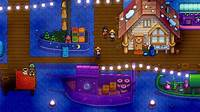
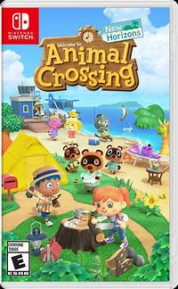

Stardew Valley
Stardew Valley adalah game simulasi pertanian di mana pemain mewarisi lahan pertanian yang terbengkalai dan bertugas mengembangkannya. Selain bertani, pemain dapat memancing, menambang, berinteraksi dengan penduduk desa, dan menjelajahi berbagai aktivitas lainnya. Grafis pixel art yang menawan dan musik yang menenangkan menjadikan game ini pilihan ideal untuk relaksasi.
Animal Crossing: New Horizons
Dalam Animal Crossing: New Horizons, pemain pindah ke pulau terpencil dan membangun komunitas dari awal. Game ini menawarkan berbagai aktivitas seperti berkebun, memancing, menangkap serangga, dan mendekorasi rumah serta pulau sesuai keinginan. Dengan grafis yang cerah dan suasana yang damai, game ini memberikan pengalaman bermain yang santai dan menyenangkan. /p>
Journey

Journey adalah game petualangan yang menekankan eksplorasi dan pengalaman emosional. Pemain mengendalikan karakter berjubah yang melakukan perjalanan melintasi gurun menuju gunung yang jauh. Tanpa dialog atau teks, game ini mengandalkan visual yang memukau dan musik yang indah untuk menyampaikan cerita dan emosi, menciptakan pengalaman yang mendalam dan menenangkan.